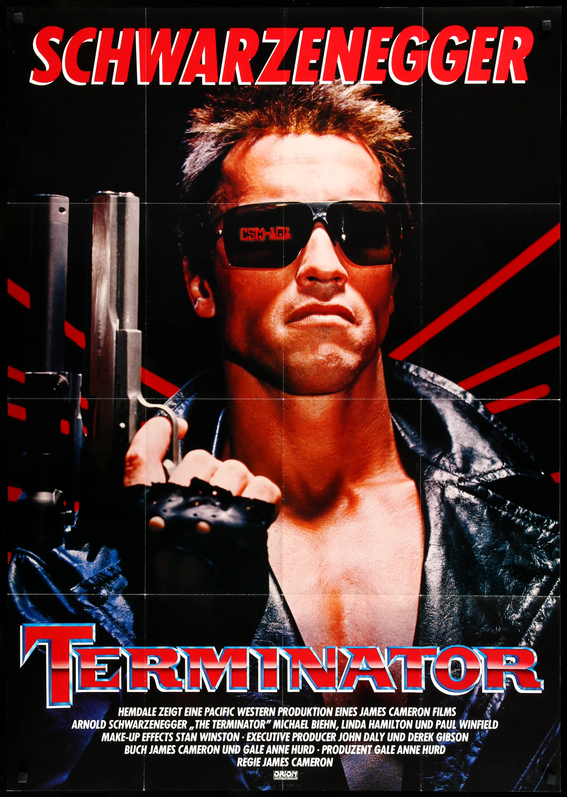
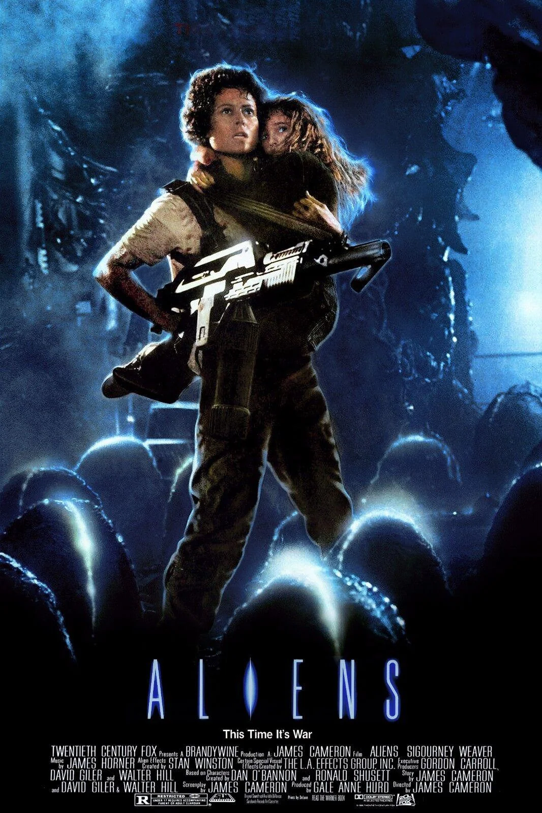
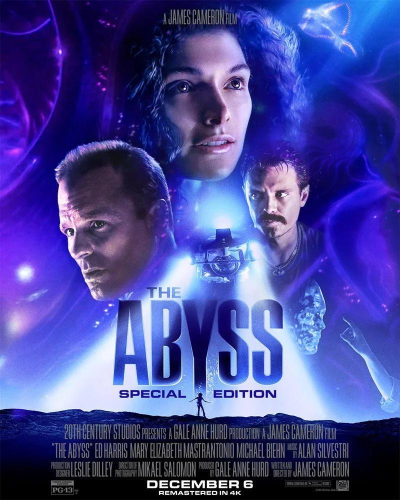
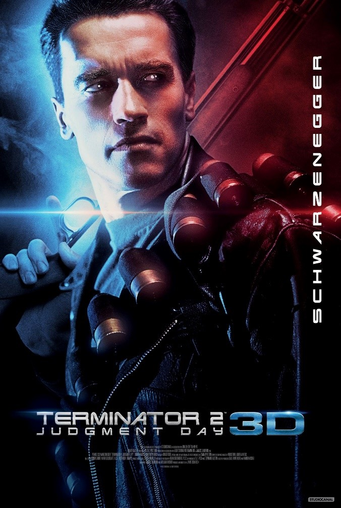
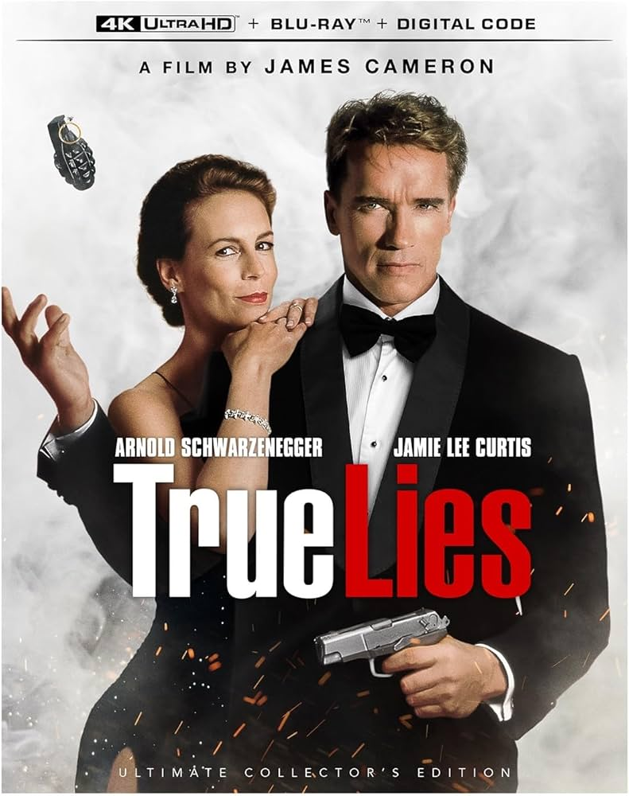
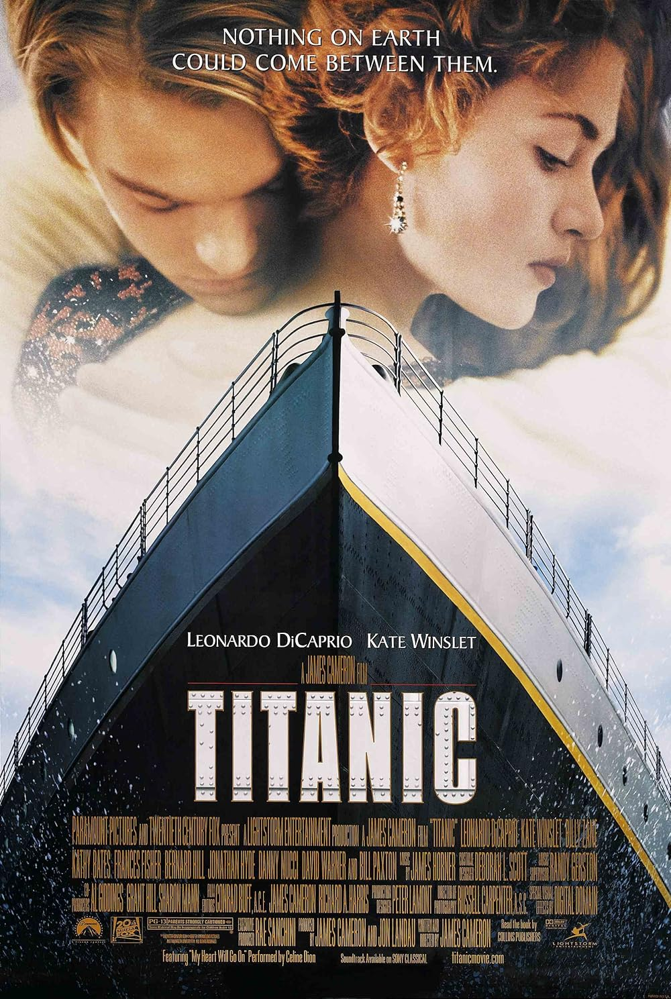
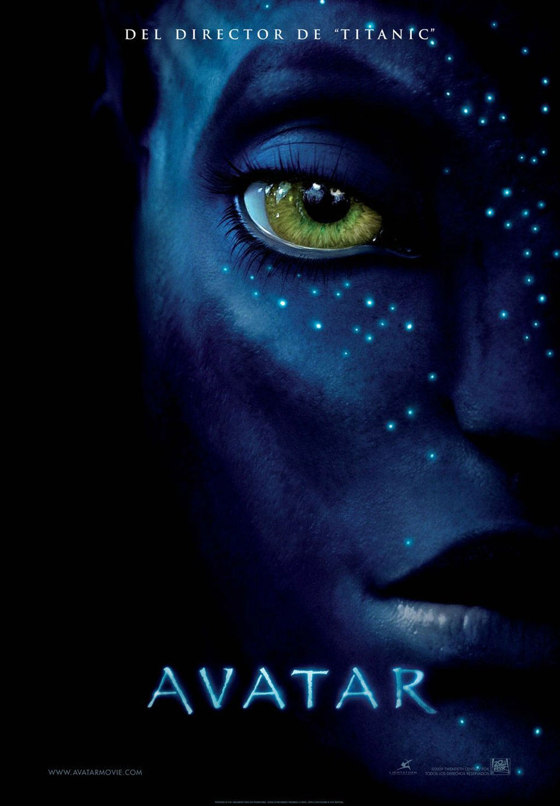

James Cameron: el director que convirtió la ambición en cine
"James Cameron es uno de los directores y guionistas más influyentes de Hollywood, creador de obras icónicas como Titanic y Avatar. Su cine combina espectáculo visual con emoción humana, logrando conectar con audiencias de todo el mundo."
Filmografía: Haga clic para ver detalles

The Terminator (1984)

Aliens (1986)

The Abyss (1989)

Terminator 2 (1991)

True Lies (1994)

Titanic (1997)

Avatar (2009)

Avatar: The Way of Water (2022)